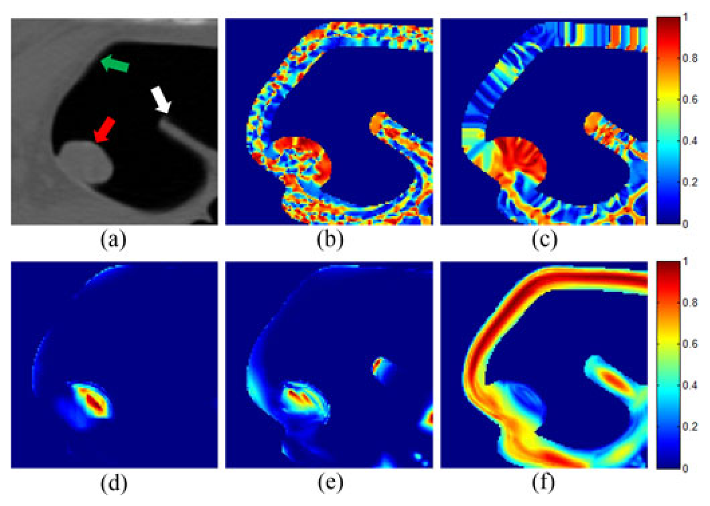
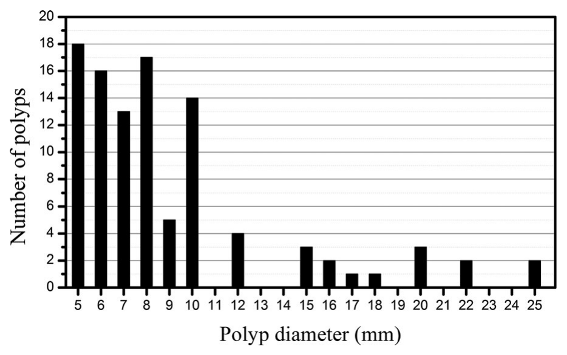
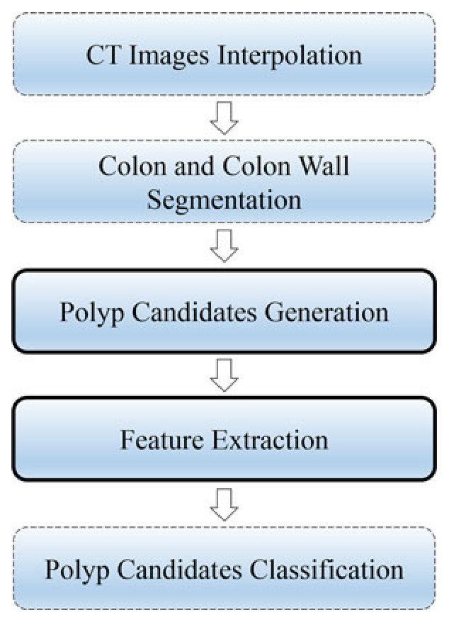
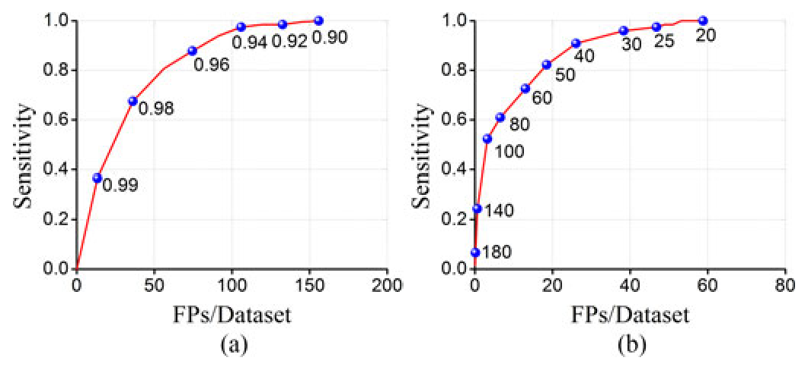
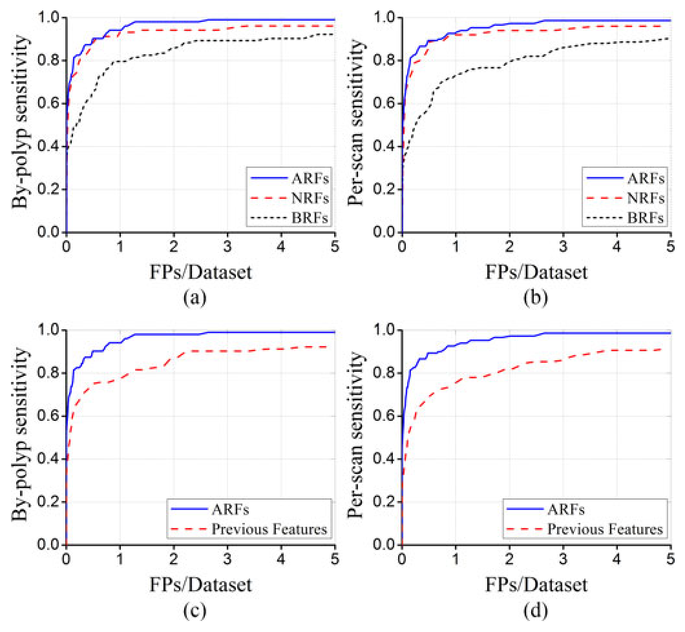
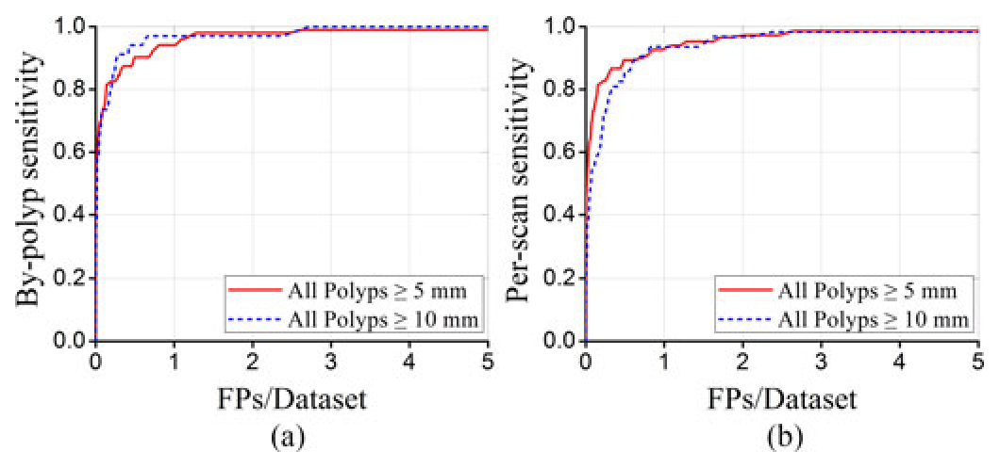
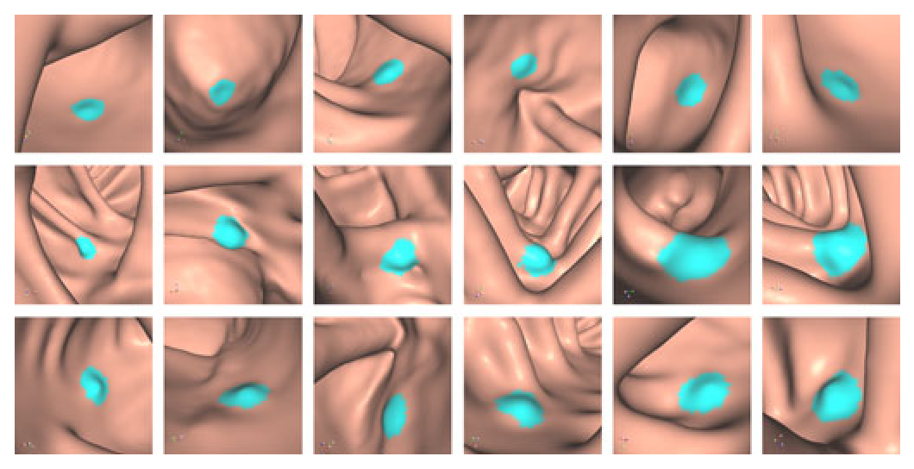
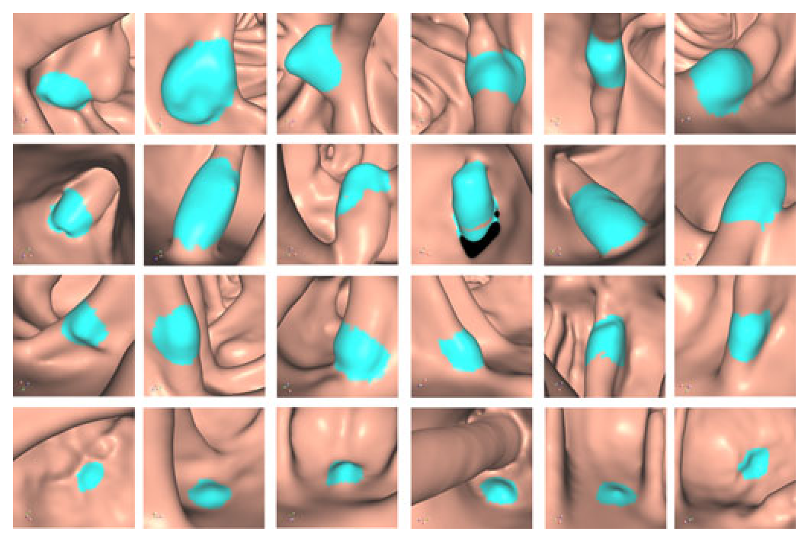

CAD-CTC: why a geodesic distance field cuts false positives before radiomics finishes the job
The short version. Computed tomography colonography (CTC), also called virtual colonoscopy, asks a computer-aided detection system for CTC (CAD-CTC) to mark colorectal polyps in a 3D CT scan. The hard part is not only finding polyps; it is avoiding false positives (FPs), meaning non-polyp structures that the system still marks as polyps. By-polyp sensitivity is the fraction of true polyps detected, per-scan sensitivity is the fraction of abnormal CT scans with at least one detected polyp, and FP/scan is the average number of false detections per CT scan. On 152 WRAMC scans from 76 patients, the full system reports 98.1% by-polyp sensitivity and 95.3% per-scan sensitivity at 1.3 FP/scan for polyps ≥5 mm. The first move is to compute shape index (SI) and multiscale dot enhancement in a Gaussian-smoothed geodesic distance field (GDF), a field whose value is distance from the colon inner surface, instead of directly in CT intensity. That switch keeps all 197 polyp views (each polyp is scanned twice, supine and prone, so most count as two views) during candidate generation while lowering candidate FPs from 104.5 to 58.8 per scan. The second move is a roughly 640-dimensional radiomic feature set, where radiomics means many quantitative image descriptors, followed by Random Forests false-positive reduction.
{kind=link}

1. Motivation: false positives are the bottleneck
Most CAD-CTC systems have two stages. The first stage generates many suspicious regions on the colon wall. The second stage classifies those candidates and removes FPs. The paper targets both stages, but the clinical pressure is clear: haustral folds, residual fecal material, tubes, and the ileocecal valve can look enough like a polyp to flood the reader with false marks.
The usual candidate generator measures curvature or related shape cues in the CT image. That is fragile here. The paper states two reasons. First, a polyp can have heterogeneous CT intensity: its center may resemble normal tissue, while its boundary may resemble surrounding air or tagged material. Second, pseudo-enhancement (PEH) between polyps and tagged material can bias CT intensity near the colon wall. So the system is trying to infer shape from a field that is not purely shape.
Q: Why would a distance field help if the target is still a 3D polyp?
Guide: ask what changes when the scalar value is distance from the colon inner surface instead of CT attenuation.
A: A GDF turns the inside of a protruding polyp into a smooth distance mound. The mound is tied to geometry, not to local CT brightness. Curvature and dot filters then see the polyp as a shape, not as a patchy intensity object.
Takeaway: The paper's first idea is not a larger classifier. It is a cleaner field in which the old shape measurements make more sense.
2. Contribution: one geometry fix, one feature fix
The authors state a CAD-CTC scheme that combines GDF-based candidate generation with radiomic false-positive reduction. In candidate generation, SI and multiscale enhancement filters are computed in the Gaussian-smoothed GDF. The dot filter is used with SI to find polyp candidates; line and plane responses also become useful descriptors later. In FP reduction, the paper extracts 440 basic radiomic features collected from previous radiomic studies and 200 newly developed radiomic features designed for polyp detection.
The useful reader-side interpretation is that GDF appears twice. It first reduces the number of candidates that reach the classifier: the GDF version keeps 100% candidate sensitivity with 58.8 FP/scan, while the CT-intensity baseline needs 104.5 FP/scan for the same 100% candidate sensitivity. It then supplies high-value features: the top nine Gini-ranked features are GDF first-order statistics. That does not prove GDF alone solves the task, but it does show that the representation is doing work in both stages.
| Stage | Problem it attacks | Paper's move | Evidence in the paper |
|---|---|---|---|
| Candidate generation | CT intensity is a noisy field for shape measurement. | Compute SI and multiscale dot enhancement in Gaussian-smoothed GDF. | 100% candidate sensitivity with 58.8 FP/scan, versus 104.5 FP/scan for the CT-intensity baseline. |
| FP reduction | Folds, walls, tubes, and valves remain visually similar to polyps. | Extract 640 radiomic features and train Random Forests with SMOTE-balanced positives. | All radiomic features reach 98.1% by-polyp and 95.3% per-scan sensitivity at 1.3 FP/scan. |
3. Dataset and metrics: what is counted?
The dataset contains 152 oral contrast-enhanced CT scans from the Walter Reed Army Medical Center (WRAMC) database, stored in the National Cancer Institute Image Archive Resources. They are supine and prone scans from 76 patients. The paper reports 120 kVp, 200-380 mA, 1.25-2.5 mm slice thickness, volumes from 512x512x361 to 512x512x505, and in-plane spacing from 0.54 to 0.91 mm.
All polyps used in the study were confirmed by colonoscopy and visible on retrospective CT colonography review. There are 103 polyps ≥5 mm, including 34 polyps ≥10 mm. Ninety-four polyps are visible in both supine and prone scans, and nine are visible in only one scan, so candidate-generation evaluation uses 197 polyp views. Morphologically, the set contains 11 flat, 64 sessile, and 28 pedunculated polyps.
{kind=link}

| Item | Paper value | How it is used |
|---|---|---|
| Patients / scans | 76 patients / 152 CT scans | Patient-level fourfold cross-validation; each fold has 19 patients. |
| Polyps ≥5 mm | 103 polyps, 197 visible views | Main detection target and candidate-generation count. |
| Polyps ≥10 mm | 34 polyps | Large-polyp subgroup evaluation. |
| True positive candidate | Candidate region overlaps a ground-truth polyp region. | Used for FROC analysis and sensitivity. |
| By-polyp sensitivity | Detected polyps / all polyps. | A polyp is detected if found in either supine or prone scan. |
| Per-scan sensitivity | Correctly detected abnormal scans / all abnormal scans. | A scan with several polyps is counted detected if at least one polyp is detected. |
| FP/scan | False positives per dataset, where one dataset is one CT scan. | Main false-positive rate throughout the paper. |
4. Pipeline: deterministic image processing before a trained classifier
{kind=link}

The colon volume is segmented with a partial-volume method. Voxels are initially assigned using thresholds at -650, 0, and 370 HU, then tissue-mixture components are estimated with a maximum-a-posteriori expectation-maximization algorithm. Voxels with air or tagged-material components form the colon volume. A 3D dilation with an 8 mm ball structuring element followed by an exclusive-or operation gives the colon wall.
Candidate generation then has two gates. First, voxels with SI above 0.76 inside the colon wall form 3D suspicious regions; a region is discarded unless it has at least one voxel on the colon inner surface with SI at or above the tuned threshold \(\mathrm{SI}_{Th}\). Second, dot-enhanced voxels at or above \(\mathrm{Dot}_{Th}\) seed region growing inside those suspicious regions. The resulting candidates are dilated by 2.5 mm and then refined with a convex-condition dilation, which keeps an added voxel only when its local neighborhood (a 5-voxel-radius sphere) stays mostly inside the candidate — the inside voxels must be at least 0.99 times the outside voxels — so the region cannot leak along the flat colon wall.
Q: Why does the pipeline still need a classifier if the GDF candidate generator is better?
A: Candidate generation is tuned to miss no polyp views. That choice keeps sensitivity high, but it still leaves 58.8 FP/scan. The classifier is the step that turns a high-recall candidate list into a usable CAD output.
Takeaway: The GDF stage improves the starting list; Random Forests still carry the final FP reduction.
5. Method: how the GDF makes polyp shape measurable
The geodesic distance (GD) transform assigns each voxel a shortest-path distance to seed points on the colon wall inner surface. The paper computes distance on a 26-neighborhood using a 3-4-5 chamfer distance. This is an integer-grid approximation to physical distance in a voxel graph.
Once the GDF is Gaussian-smoothed, the paper computes shape index. SI is a curvature descriptor built from the two principal curvatures \(k_1\) and \(k_2\). A cap-like protrusion, which is the geometric model for a polyp growing from the wall, gives high SI.
The multiscale filters use eigenvalues of the Hessian matrix. The intuition is simple: a dot-like structure has strong curvature in three directions, a line-like structure in two directions, and a plane-like structure in one direction. The filters are therefore written as tests on the ordered Hessian eigenvalues \(\lambda_1,\lambda_2,\lambda_3\), with \(|\lambda_1|\ge|\lambda_2|\ge|\lambda_3|\).
Multiscale aggregation then searches over six scales. The paper uses \(d_0=4\) mm and \(d_1=32\) mm, matching the size range it wants to enhance.
The enhancement filters are computed in a mapped GDF, not in raw GDF. The linear mapping enlarges the dynamic range and makes the distance values behave more like a CT-intensity contrast between air and bone.
Feature extraction also corrects CT density in the colon wall because tagged material can still cause PEH. The paper maps soft-tissue voxels above 100 HU using thresholds \(t_1=100\), \(t_2=370\), and \(t_3=-650\) HU, then clamps the result at -999 HU.
Q: What is the smallest example that explains the method?
A: Picture one bump on the colon wall. In CT intensity, the bump can be bright at its edge and ordinary in the middle. In GDF, the same bump becomes a smooth mound. SI and dot filtering are easier on a mound than on a patchy intensity map.
Takeaway: The method works by making the measurement field match the object geometry.
6. Training and compute: Random Forests, not an end-to-end model
After candidate generation, each candidate is represented by 640 radiomic features. The paper groups them into 440 basic radiomic features (BRFs) and 200 newly developed radiomic features (NRFs). The classifier is Random Forests with 200 trees. Random Forests are used because they handle high-dimensional samples and are described by the paper as robust against overfitting without an additional feature-selection stage.
| Feature family | BRFs | NRFs | Role |
|---|---|---|---|
| 3D shape and size | 8 features | 28 features: chord-length, 3D moment invariants, and ellipsoid-fitting features | Describe size, sphericality, irregularity, and fitted shape. |
| Enhancement features | 0 | 144 features from dot-, line-, and plane-enhanced images | Describe how the candidate responds as dot-like, line-like, or plane-like structure. |
| GDF features | 0 | 14 first-order statistics | Describe the distribution of geodesic distance values in the candidate. |
| Gradient features | 0 | 14 first-order statistics | Describe internal CT-gradient structure. |
| CT image features | 48 basic statistical features | 0 | Describe intensity distribution and texture in the corrected CT image. |
| 3D wavelet features | 384 features | 0 | Describe multifrequency texture across eight Coiflet-1 decompositions. |
| Item | Paper statement | What is not stated |
|---|---|---|
| Classifier | Random Forests with 200 trees; default values for the other parameters. | Specific software implementation is not stated in the paper. |
| Class imbalance | Positive samples are oversampled with synthetic minority over-sampling technique (SMOTE). | SMOTE ratio is not stated in the paper. |
| Cross-validation | Fourfold cross-validation at patient level; 19 patients per fold. | Random seed and exact fold assignments are not stated in the paper. |
| Hardware and runtime | Not stated in the paper. | Training time, inference time, CPU/GPU hardware, and memory use are not stated in the paper. |
| Code | Not stated in the paper. | Public release is not stated in the paper. |
No GPU-hours number is disclosed, so this page does not estimate one.
7. Experiments: what each result table proves
The experiments are easiest to read in layers. Candidate generation tests whether GDF is a better field than CT intensity for SI and dot filtering. Feature experiments test whether all radiomic features, newly developed features, basic features, and previous CAD-CTC features differ after Random Forests classification. Size experiments test whether the final system behaves differently for polyps ≥5 mm and ≥10 mm.
{kind=link}

| Methods | Sensitivity (detected polyp views versus all polyp views) | FPs per dataset |
|---|---|---|
| Baseline method | 100% (197/197) | 104.5 |
| Proposed method | 100% (197/197) | 58.8 |
Table I is a like-for-like comparison: both rows detect all 197 polyp views, and the difference is the coordinate field used for SI and dot enhancement. The GDF row does not improve candidate sensitivity because both are already at 100%; it improves the number of FPs that the classifier must later handle.
{kind=link}

| Feature set | By-polyp sensitivity | Per-scan sensitivity |
|---|---|---|
| BRFs, 440 basic radiomic features | 81.6% | 76.0% |
| NRFs, 200 newly developed radiomic features | 93.5% | 92.0% |
| ARFs, all 640 radiomic features | 98.1% | 95.3% |
| Previous 56 features: first-order statistics of SI, curvedness, CT values, and CT-density gradient | 81.6% | 78.0% |
One row pair can read like a typo: BRFs and the previous 56-feature set land on the same 81.6% by-polyp sensitivity. They are not identical, though — they separate at the per-scan level (76.0% versus 78.0%) and across the rest of the FROC curve. The all-feature ARF set is the clear winner on both measures.
| Feature groups | Important features |
|---|---|
| 3D shape and size features | Minimum of chord lengths, minimum radius of fitted ellipsoid, and surface-to-volume ratio. |
| Enhancement features | First-order statistics: energy, median, range, mean, maximum, and variance of dot-enhanced image. Co-occurrence matrix-based features: cluster shade, cluster tendency, information measure of correlation 2, correlation, cluster prominence, information measure of correlation 1, variance, contrast, autocorrelation, entropy, energy, and sum average of dot-enhanced image. Run-length matrix-based features: high-gray-level run emphasis, low-gray-level run emphasis, and short-run high-gray-level emphasis of dot-enhanced image. |
| GDF features | First-order statistics: maximum, range, variance, median, standard deviation, mean absolute deviation, root mean square, mean, and energy. |
| CT image features | First-order statistics: mean, skewness, median, and root mean square. Co-occurrence matrix-based features: autocorrelation, sum average, sum variance, variance, inverse variance, and cluster shade. Run-length matrix-based features: long-run high-gray-level emphasis and high-gray-level run emphasis. |
| Wavelet features | First-order statistics: sum variance of LLL. Co-occurrence matrix-based features: variance of LLL. Run-length matrix-based features: gray-level non-uniformity of HHH, gray-level non-uniformity of HLH, and long-run high-gray-level emphasis of LLL. |
Table II is important because it explains why the feature ablation is not just a feature-count story. The top 50 include 32 NRFs and 18 BRFs, and the paper states that all top nine ranked features are GDF features. That supports the narrower claim that GDF-derived features are highly discriminative in this setup.
{kind=link}

{kind=link}

| CAD-CTC scheme | Year | # patients for testing | # polyps | Polyp sizes | Tagged fluid | WRAMC database | Validation | Sensitivitya | FP rateb |
|---|---|---|---|---|---|---|---|---|---|
| Summers et al. [4] | 2001 | 20 | 28 | ≥10 mm | No | No | Independent test | 64% by-polyp | 3.5 FPs/dataset |
| Yoshida et al. [5] | 2001 | 43 | 21 | ≥5 mm | No | No | Leave-one-lesion-out | 95% per-scan | 1.2 FPs/dataset |
| Nappi et al. [34] | 2002 | 43 | 12 | ≥5 mm | No | No | Leave-one-lesion-out | 95% per-scan | 1.7 FPs/dataset |
| Nappi et al. [6] | 2003 | 72 | 21 | ≥5 mm | No | No | Leave-one-lesion-out | 95% by-polyp | 1.5 FPs/patient |
| Paik et al. [7] | 2004 | 8 | 6 | ≥10 mm | No | No | Leave-one-lesion-out | 100% by-polyp | 7.0 FPs/dataset |
| Wang et al. [8] | 2005 | 153 | 61 | ≥5 mm | Yes | No | LOPO | 100% by-polyp | 2.68 FPs/dataset |
| Wang et al. [8] | 2005 | 153 | 11 | ≥10 mm | Yes | No | LOPO | 100% by-polyp | 2.0 FPs/dataset |
| Summers et al. [35] | 2005 | 792 | 28 | ≥10 mm | Yes | Yes | Independent test | 89.3% by-polyp | 2.1 FPs/patient |
| Taylor et al. [36] | 2006 | 25 | 32 | ≥6 mm | Yes | No | Independent test | 81% by-polyp | 13.0 FPs/patient |
| Suzuki et al. [37] | 2006 | 73 | 28 | ≥5 mm | Yes | No | Independent test | 96.4% by-polyp | 2.1 FPs/patient |
| Kim et al. [9] | 2007 | 30 | 40 | ≥6 mm | No | No | Independent test | 92.5% by-polyp | 3.1 FPs/dataset |
| Nappi et al. [17] | 2007 | 32 | 40 | ≥6 mm | Yes | Yes | LOPO | 95% by-polyp | 3.6 FPs/dataset |
| Nappi et al. [17] | 2007 | 32 | 16 | ≥10 mm | Yes | Yes | LOPO | 94% by-polyp | 3.6 FPs/dataset |
| Nappi et al. [17] | 2007 | 32 | 44 | ≥6 mm | Yes | No | LOPO | 86% by-polyp | 4.2 FPs/dataset |
| Nappi et al. [17] | 2007 | 32 | 21 | ≥10 mm | Yes | No | LOPO | 100% by-polyp | 4.2 FPs/dataset |
| Li et al. [24] | 2008 | 44 | 45 | 6-9 mm | Yes | Yes | Fourfold cross validation | 71% by-polyp | 5.38 FPs/patient |
| Summers et al. [38] | 2008 | 104 | 47 | ≥10 mm | Yes | Yes | Independent test | 91.5% by-polyp | 9.6 FPs/patient |
| Wang et al. [39] | 2008 | 791 | 193 | 6-9 mm | Yes | Yes | Independent test | 83% by-polyp | 9 FPs/patient |
| Yao et al. [40] | 2009 | 792 | 155 | ≥6 mm | Yes | Yes | Independent test | 95% by-polyp | 2.4 FPs/patient |
| Yao et al. [40] | 2009 | 792 | 43 | ≥10 mm | Yes | Yes | Independent test | 93% by-polyp | 1.2 FPs/patient |
| Li et al. [41] | 2009 | 792 | 121 | ≥6 mm | Yes | Yes | Independent test | 77.4% by-polyp | 5.83 FPs/patient |
| Li et al. [41] | 2009 | 792 | 30 | ≥10 mm | Yes | Yes | Independent test | 91.3% by-polyp | 2.30 FPs/patient |
| Oda et al. [11] | 2009 | 104 | 57 | ≥6 mm | Yes | Yes | Independent test | 91.2% by-polyp | 11.4 FPs/patient |
| van Wijk et al. [12] | 2010 | 84 | 57 | ≥6 mm | No | No | LOPO | 95% by-polyp | 4 FPs/dataset |
| Zhu et al. [42] | 2010 | 325 | 125 | ≥10 mm | Yes | Yes | Independent test | 93.1% by-polyp | 1.92 FPs/dataset |
| Wang et al. [43] | 2010 | 66 | 96 | ≥6 mm | Yes | Yes | LOPO | 83% by-polyp | 5 FPs/dataset |
| Liu et al. [44] | 2011 | 791 | 267 | 6-9 mm | Yes | Yes | Independent test | 62% by-polyp | 10 FPs/patient |
| Lee et al. [13] | 2011 | 33 | 30 | ≥6 mm | No | No | Independent test | 93.3% by-polyp | 7.7 FPs/patient |
| Lee et al. [13] | 2011 | 33 | 13 | ≥10 mm | No | No | Independent test | 92% by-polyp | 7.7 FPs/patient |
| Mang et al. [45] | 2012 | 1689 | 564 | ≥6 mm | Yes | Yes | Independent test | 86.9% by-polyp | 4.9 FPs/patient |
| Wang et al. [15] | 2015 | 60 | 130 | 5-8 mm | Yes | No | LOPO | 98% by-polyp | 2.2 FPs/dataset |
| Roth et al. [46] | 2015 | 792 | 173 | ≥6 mm | Yes | Yes | Independent test | 75% by-polyp | 3 FPs/patient |
| Roth et al. [46] | 2015 | 792 | 37 | ≥10 mm | Yes | Yes | Independent test | 95% by-polyp | 1 FPs/dataset |
| The proposed scheme | - | 76 | 103 | ≥5 mm | Yes | Yes | Fourfold cross validation | 98.1% by-polyp; 95.3% per-scan | 1.3 FPs/dataset |
| The proposed scheme | - | 76 | 34 | ≥10 mm | Yes | Yes | Fourfold cross validation | 97.1% by-polyp; 93.7% per-scan | 0.7 FPs/dataset; 0.8 FPs/dataset |
a By-polyp means by-polyp sensitivity, whereas per-scan means per-scan sensitivity. b FPs/dataset is false positives per dataset, whereas FPs/patient is false positives per patient.
Table III should not be read as a leaderboard. Several rows report equal or higher by-polyp sensitivity than the proposed scheme, including Paik et al. [7] and Wang et al. [8], but they use different datasets, validation settings, polyp-size thresholds, or FP denominators, and usually report higher FP rates. In particular, rows reporting FPs per patient pool the two scans of each patient, so a per-patient rate is roughly twice the equivalent per-scan rate. The safest claim is narrower: within the paper's WRAMC-centered relative comparison, the proposed rows combine high sensitivity with low FP/scan, but they are not a direct head-to-head win over every listed method.
8. Ablations and failure analysis: what remains after classification?
The paper's main ablations have already appeared in the experiments: Table I isolates the candidate-generation coordinate system, and Figure 5 isolates feature groups. Read together, they support the mechanism. GDF reduces the candidate burden before learning, while GDF-derived and enhancement-derived radiomic features help Random Forests separate true polyps from non-polyps.
The remaining FPs at the final operating point are not random. The paper reports that 71.7% are on haustral folds, 14.3% are on colon walls, 9.4% are on ileocecal valves, and 4.6% are on rectal tubes. These structures have shapes and textures similar to polyps, so they survive the hand-designed geometric and texture features more often than other structures.
{kind=link}

Q: Do the ablations explain the result, or only report it?
A: They explain it in two steps. GDF makes the candidate list cleaner. Radiomic features, especially GDF and enhancement features, make the classifier stronger. The remaining errors are the structures that still look like polyps.
Takeaway: The gains and the failures point to the same story: geometry helps, but look-alike anatomy remains difficult.
9. Limitations: where the evidence stops
| Boundary | Paper evidence | How to read it |
|---|---|---|
| Validation scope | One WRAMC collection, evaluated with patient-level fourfold cross-validation. | External generalization across scanners, sites, bowel preparations, and populations is not established. |
| Feature/sample ratio | 640 features, 103 polyps ≥5 mm, many generated candidates. | Random Forests and SMOTE help, but a larger independent test would be needed for deployment-level confidence. |
| Threshold dependence | \(\mathrm{SI}_{Th}=0.9\), \(\mathrm{Dot}_{Th}=20\), SI > 0.76, 2.5 mm dilation, convexity 0.99, and the GDF linear-mapping constants \(f_1=25\) and \(f_2=1000\) (Eq. 12). | These choices are tuned in this dataset; transfer sensitivity is not fully quantified. |
| Residual error type | Most final FPs come from folds, walls, valves, and tubes. | The method is weakest when non-polyps are genuinely polyp-like in shape and texture. |
| Runtime, hardware, code | Not stated in the paper. | Reproduction cost cannot be calculated from disclosed numbers. |
The main practical conclusion should therefore stay calibrated. The paper demonstrates a strong hand-engineered CAD-CTC pipeline on its WRAMC validation setup. It does not establish a universal clinical operating point across independent hospitals.
10. Summary: the useful lesson
In one sentence: this CAD-CTC scheme improves polyp detection by measuring shape in a geodesic distance field before using a large radiomic feature set to suppress the remaining false positives.
- The GDF switch is the cleanest mechanism: it preserves 100% candidate sensitivity while reducing candidate FPs from 104.5 to 58.8 per scan.
- The classifier result is not just "more features"; GDF and dot-enhancement features dominate the Gini-ranked list, and all 640 features outperform both BRFs and NRFs alone.
- The final result is strong but bounded: 98.1% by-polyp and 95.3% per-scan sensitivity at 1.3 FP/scan for polyps ≥5 mm, under one WRAMC fourfold cross-validation setup.
Sources and figure assets
- Yacheng Ren, Jingchen Ma, Junfeng Xiong, Lin Lu, and Jun Zhao. High-Performance CAD-CTC Scheme Using Shape Index, Multiscale Enhancement Filters, and Radiomic Features. IEEE Transactions on Biomedical Engineering, vol. 64, no. 8, pp. 1924-1934, August 2017. Date of publication: November 22, 2016. DOI: 10.1109/TBME.2016.2631245.
- All equations, figures, tables, and numbers in this page are based on the local source PDF
sources/cadctc.pdf. - Figure assets are local PNGs under
../assets/figures/cadctc/:cadctc_fig1.pngthroughcadctc_fig8.pngandcadctc_thumb.png. - Related methods cited by the paper include Shape Index for CAD-CTC [5], multiscale enhancement filters [18], geodesic distance fields [19], radiomics [20], [21], Random Forests [23], partial-volume colon cleansing [25], and SMOTE [32].